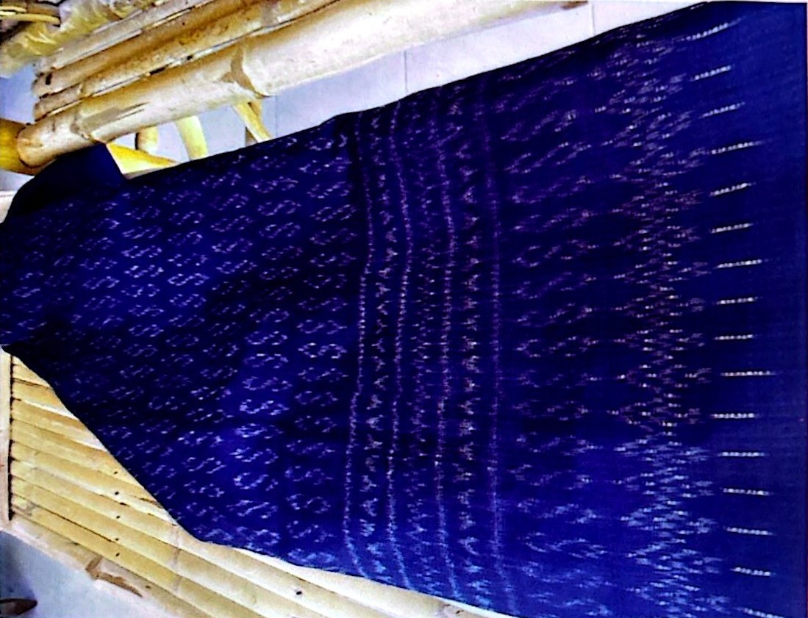

นอกจากลวดลายการทอผ้าที่มีการคิดค้นประดิษฐ์จากรุ่นสู่รุ่นแล้ว ด้วยพระกรุณาธิคุณอย่างหาที่สุดของ สมเด็จพระเจ้าลูกเธอเจ้าฟ้าสิริวัณณวรี นารีรัตนราชกัญญา ที่ได้รับพระราชทานลาย “ผ้ามัดหมี่ลายขอเจ้าฟ้าสิริวัณณวรีฯ” เพื่อเป็นของขวัญปีใหม่และสื่อความหมายถึงการ ส่งมอบความรักและความสุขให้แก่ชาวไทยทุกคน และประทานอนุญาตให้กลุ่มทอผ้าทุกกลุ่ม ทุกเทคนิค สามารถนำไปใช้ทอผ้า ผลิตผ้าได้ ซึ่งนับเป็น โดยความหมายของ “ผ้ามัดหมี่ลายขอเจ้าฟ้าสิริวัณณวรีฯ” นั้น ลาย " S " หมายถึง Sirivannavari สมเด็จพระเจ้าลูกเธอเจ้าฟ้าสิริวัณณวรี นารีรัตนราชกัญญา ส่วนลาย " S " จำนวน 10 แถว หมายถึง พระเจ้าอยู่หัวรัชกาลที่ 10 พระบาทสมเด็จ พระวชิรเกล้าเจ้าอยู่หัว และลายบริเวณเชิงผ้าที่เป็นรูปหัวใจ หมายถึง ความรัก ที่พระองค์ทรงมีต่อ ประชาชนชาวไทย - Eternal Love เพื่อเป็นการจุดประกายความคิดในการพัฒนาลวดลายผ้า และพัฒนาผลิตภัณฑ์ผ้าไทยให้มีความร่วมสมัย สามารถก้าวสู่ระดับสากลเพื่อวิถีชุมชนที่ยั่งยืน ซึ่งกลุ่มสตรีอาสาไทยพวนได้นำ “ลายผ้ามัดหมี่ลายขอเจ้าฟ้าสิริวัณณวรีฯ” มาทอ
